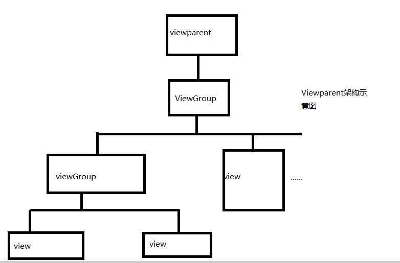

Android 控件架构
如果说Android上的app是一个有血有肉的人的话，那么人靠衣装马靠鞍，那么控件就是把app装扮的漂漂亮亮的“衣服”。那么安卓的控件到底是如何架构，又是如何渲染的了。
无论是什么控件，在Android中控件只有两种，一种就是View，另一种是ViewGroup。ViewGroup控件组，一个控件的百宝箱，可以包含各种各样的控件组，它不仅能够包含控件还能够管理着控件。通过ViewGroup，整个控件就至上而下的形成了树形结构，即我们通常所说的控件树；父控件负责相应子控件的绘制与测量，并向其传递交互事件。安卓系统怎么准确无误的找到每一个控件？只需要调用findViewbyid的方法就能够按照深度优先的方法找到每一个控件了。在每个控件树最顶端，都站立了一个Viewparent对象，这个对象也是这颗控件树的核心，所有的交互管理事件都是由这个大大负责统一分配和调度，从而起这一个整体宏观调控的效果。一个控件树架构如图所示：

做过Android开发都知道，要使一个activity显示相应的布局文件，都必须要setContentView。我们要看一下setContentView背后到底发生了什么，Android又是如何将其渲染出来的了。要解答这些问题，我们还是要了解Android的界面架构图。具体的架构图如图所示：

通过上图所示，我们可以得出这样的结论。
①每个activity都有一个window对象。
②而每一个window对象通常是由PhoneWindow来实现。
③每个PhoneWindow对象包含DecorView这个根视图对象，将其视图展示都是通过这个对象显示到PhoneWindow上。
④而DecorView被一分为二，一个是TitleView，一个ContentView，TitleView显示相应的标题，ContentView显示具体布局，这些应该大家很熟悉。
这样架构也可以建立一个上文提到的视图树，这颗视图树长成这个样子：

这样控件树，能够帮我们解答这样一个问题为什么requestWindowFeature（）一定要在setContentView之前调用才能起效。这是由于TitleBar下面才是ContentView，在ContentView之后设置，这时，只能有ContentView。当程序在oncreate方法调用setcontentView后会调用onResume方法，此时系统会把整个DecorView添加到PhoneWindow中，最终将视图显示出来。


posted on 2016-03-15 08:57 laozhu1124 阅读(458) 评论(2) 编辑 收藏
【推荐】融云即时通讯云－专注为 App 开发者提供IM云服务
【推荐】UCloud开年大礼，充5000返1000；买云主机送CDN，详情点击

· 华为企业部门营收激增 去年已达42.5亿美元
· google加密Android遭手机厂商抵制 担心运行速度变慢
· ParaZero为无人机设计紧急降落伞：SafeAir
· Android Chrome浏览器将支持下载暂停和取消
· AMD称已统治83％的VR市场
» 更多新闻...

» 更多知识库文章...
Powered by:
博客园
Copyright © laozhu1124
导航

统计
- 随笔 - 226
- 文章 - 0
- 评论 - 571
- 引用 - 0
公告
搜索
最新随笔
随笔档案(227)
积分与排名
- 积分 - 287541
- 排名 - 425
最新评论
- 1. Re:Android 控件架构
- 什么 没看懂
- --laozhu1124
- 2. Re:Android 控件架构
- 最后一段完全没看懂，感觉写得有点乱。
- --zdd
- 3. Re:Monkey测试简介
- 请问这本书叫什么
- --思林1234
- 4. Re:art虚拟机介绍
- 怎样的?坑
- --牧 天
- 5. Re:谈谈eclipse使用技巧二
- 很不错，学习博主
- --草花筋斗
阅读排行榜
评论排行榜